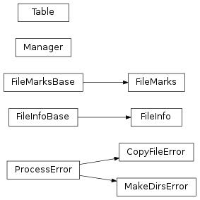

Functions and classes
Here you can find the documentation on the functions and classes
of the hep_rfm package.
Functions
copy_file(source, target[, loglock, server_spec]) |
Main function to copy a file from a source to a target. |
make_directories(target) |
Make the directories for the given target in case they do not exist already. |
rfm_hash(path) |
Use the SHA512 hash function to get the file ID of the file in the given path. |
is_remote(path) |
Check whether the given path points to a remote file. |
is_ssh(path) |
Return whether the standard ssh protocol must be used. |
is_xrootd(path) |
Return whether the path is related to the xrootd protocol. |
Classes
ProcessError(msg, stderr) |
Define an error to be raised when a subprocess call fails. |
CopyFileError(ipath, opath, stderr) |
Define an error to be raised when copying a file. |
MakeDirsError(target, stderr) |
Error to be displayed when failing making directories. |
FileInfoBase |
Base class for an object storing the information about a file. |
FileInfo |
Object to store the information about a file. |
FileMarksBase |
Base class representing an object storing the time-stamp and file ID of a file. |
FileMarks |
Represent an object storing the time-stamp and file ID of a file. |
Table(files) |
Create a table storing the information about files. |
Manager() |
Represent a class to store tables in different local/remote hosts, being able to do updates among them. |
Class Inheritance Diagram
